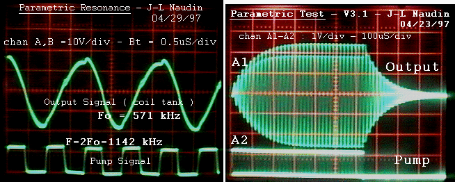

Jean-Louis Naudin - 25 April 97 - Thanks to Fred B. Epps

Current pulse through the varactors ( R=100 ohms) 10mA/div

( Left picture ) Parametric resonance with a signal pump F=2 Fo
( Right picture) Transient state : start/stop of parametric resonance